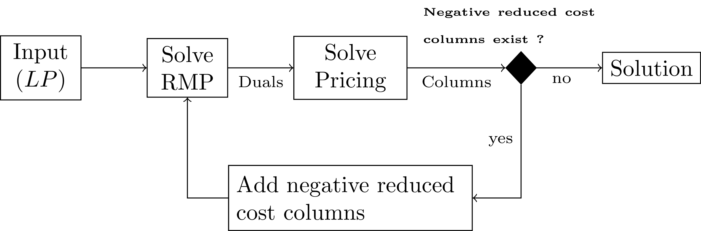
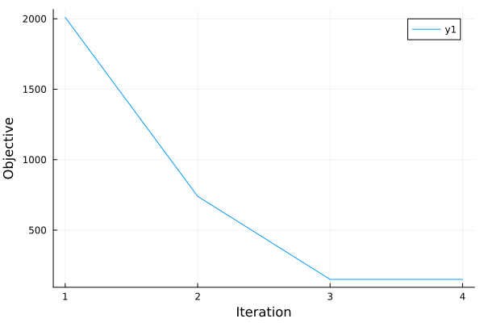

Column Generation
Index
MultiFlows.MCFPricingProblemMultiFlows.MCFPricingProblemMultiFlows.MCFRestrictedMasterProblemMultiFlows.MCFRestrictedMasterProblemMultiFlows.add_column!MultiFlows.make_pricing_graphsMultiFlows.reduced_cost_graphMultiFlows.solution_from_rmpMultiFlows.solve!MultiFlows.solve!MultiFlows.solve_column_generationMultiFlows.update_pricing_problem!
Full docs
MultiFlows.MCFPricingProblem — TypeMCFPricingProblem{T<:Number,N<:Number,F<:Union{Nothing,AbstractMatrix{Bool}}}MCF Pricing problem data container.
MultiFlows.MCFPricingProblem — MethodMCFPricingProblem(pb::MCF; filter::Union{Nothing,AbstractMatrix{Bool}}=nothing)Pricing problem constructor for problem pb.
Example
julia> prp = MCFPricingProblem(pb)
MCFPricingProblem{Int64, Int64, Nothing}([1, 1, 2, 4, 2, 3, 4, 6, 1, 5], [4, 2, 4, 7, 3, 4, 6, 7, 5, 7], Demand{Int64, Int64}[Demand{Int64, Int64}(1, 7, 5), Demand{Int64, Int64}(2, 6, 5), Demand{Int64, Int64}(3, 7, 5)], [2, 3, 3, 8, 4, 8, 3, 3, 80, 20], [0.0, 0.0, 0.0, 0.0, 0.0, 0.0, 0.0, 0.0, 0.0, 0.0], [0.0, 0.0, 0.0], nothing, {7, 10} directed simple Int64 graph with Int64 weights)
MultiFlows.MCFRestrictedMasterProblem — TypeMCFRestrictedMasterProblemConcrete type representing the MCF Restricted Master Problem data.
MultiFlows.MCFRestrictedMasterProblem — MethodMCFRestrictedMasterProblem(pb::MCF;
direct::Bool=true,
optimizer::DataType=HiGHS.Optimizer,
timelimit::Union{Nothing,Real}=nothing,
bigM_f::Function=p->sum(costs(p))
)Initialize the RMP for MCF problem pb. If direct=true the LP solver is used in direct mode.
Example
julia> pb = load("../instances/toytests/test1")
MCF(nv = 7, ne = 10, nk = 3)
Demand{Int64, Int64}(1, 7, 5)
Demand{Int64, Int64}(2, 6, 5)
Demand{Int64, Int64}(3, 7, 5)
julia> rmp = MCFRestrictedMasterProblem(pb);
julia> typeof(rmp.model)
Model (alias for GenericModel{Float64})
MultiFlows.add_column! — Methodadd_column!(rmp::MCFRestrictedMasterProblem, k::Int64, column::Vector{Int64}, demand_amount::Float64, column_weight::Float64)Add column for demand k to the master problem. column is a path $p$ represented by a sequence of edges, a new variable $x^k_p$ is added to the master problem, the capacity and convexity constraints are updated to take the new variable into account as well as the objective function.
Example
julia> num_variables(rmp.model)
3
julia> rmp.model[:capacity]
10-element Vector{ConstraintRef{Model, MathOptInterface.ConstraintIndex{MathOptInterface.ScalarAffineFunction{Float64}, MathOptInterface.LessThan{Float64}}, ScalarShape}}:
capacity[1] : 0 ≤ 6
capacity[2] : 0 ≤ 12
capacity[3] : 0 ≤ 12
capacity[4] : 0 ≤ 5
capacity[5] : 0 ≤ 11
capacity[6] : 0 ≤ 20
capacity[7] : 0 ≤ 10
capacity[8] : 0 ≤ 20
capacity[9] : 0 ≤ 10
capacity[10] : 0 ≤ 10
julia> rmp.model[:convexity]
3-element Vector{ConstraintRef{Model, MathOptInterface.ConstraintIndex{MathOptInterface.ScalarAffineFunction{Float64}, MathOptInterface.EqualTo{Float64}}, ScalarShape}}:
convexity[1] : y1 = 1
convexity[2] : y2 = 1
convexity[3] : y3 = 1
julia> objective_function(rmp.model)
670 y1 + 670 y2 + 670 y3
Now lets find a path to add to the RMP for demand k=1 and convert it to column format i.e. Vector of edge indices.
julia> p = VertexPath(enumerate_paths(dijkstra_shortest_paths(pb.graph, 1), 7))
VertexPath{Int64}([1, 4, 6, 7])
julia> column = edge_indices(p, pb.graph)
3-element Vector{Int64}:
1
7
8
julia> pw = path_weight(p, pb.graph)
8Now we add the column to the RMP :
julia> add_column!(rmp, 1, column, pb.demands[1].amount, pw)
julia> rmp.model[:capacity]
10-element Vector{ConstraintRef{Model, MathOptInterface.ConstraintIndex{MathOptInterface.ScalarAffineFunction{Float64}, MathOptInterface.LessThan{Float64}}, ScalarShape}}:
capacity[1] : 5 x1[1] ≤ 6
capacity[2] : 0 ≤ 12
capacity[3] : 0 ≤ 12
capacity[4] : 0 ≤ 5
capacity[5] : 0 ≤ 11
capacity[6] : 0 ≤ 20
capacity[7] : 5 x1[1] ≤ 10
capacity[8] : 5 x1[1] ≤ 20
capacity[9] : 0 ≤ 10
capacity[10] : 0 ≤ 10
julia> rmp.model[:convexity]
3-element Vector{ConstraintRef{Model, MathOptInterface.ConstraintIndex{MathOptInterface.ScalarAffineFunction{Float64}, MathOptInterface.EqualTo{Float64}}, ScalarShape}}:
convexity[1] : y1 + x1[1] = 1
convexity[2] : y2 = 1
convexity[3] : y3 = 1
julia> objective_function(rmp.model)
670 y1 + 670 y2 + 670 y3 + 40 x1[1]
MultiFlows.make_pricing_graphs — Methodmake_pricing_graphs(srcs::Vector{Int64}, dsts::Vector{Int64}, csts::Vector, filter::Union{Nothing,AbstractMatrix{Bool}})Prepare the graphs used for solving the pricing problem. If filter=nothing there is only one graph created, otherwise one graph is created for each column in filter (i.e. one graph for each demand).
MultiFlows.reduced_cost_graph — Methodreduced_cost_graph(prp::MCFPricingProblem, k::Int64)Get the graph used for solving the pricing problem for demand k.
MultiFlows.solution_from_rmp — Methodsolution_from_rmp(rmp::MCFRestrictedMasterProblem, pb::MCF)Extract solution to the MCF problem pb from the solution of the RMP.
MultiFlows.solve! — Methodsolve!(prp::MCFPricingProblem)Solve the pricing problem. For each demand k search for an $s_k-t_k$-path on the graph with reduced edge costs $c_a - \sigma_a$ where $\sigma_a$ is the dual of the capacity constraint corresponding to edge $a$. A path $p$ found this way are either added to the master problem if they satisfy the negative reduced cost condition $b_k * (c_p - \sigma_a ) - \tau_k < 0$.
solve!(prp) returns a list of columns which satisfy the previous condition.
Example
julia> prp = MCFPricingProblem(pb);
julia> update_pricing_problem!(prp, sigma, tau);
julia> solve!(prp)
3-element Vector{Vector{VertexPath}}:
[VertexPath{Int64}([1, 4, 6, 7])]
[VertexPath{Int64}([2, 4, 6])]
[VertexPath{Int64}([3, 4, 6, 7])]
MultiFlows.solve! — Methodsolve!(rmp::MCFRestrictedMasterProblem)Solve the RMP. Calls JuMP.optimize!(rmp.model). Returns the objective value and duals for the capacity and convexity constraints.
Example
julia> obj, sigma, tau = solve!(rmp)
(2010.0, [0.0, 0.0, 0.0, 0.0, 0.0, 0.0, 0.0, 0.0, 0.0, 0.0], [670.0, 670.0, 670.0])
MultiFlows.solve_column_generation — Methodsolve_column_generation(pb::MCF;
max_unchanged::Int64=5,
max_iterations::Int64=100,
direct::Bool=true,
rmp_solve_callback::Function=(rmp) -> (),
return_rmp::Bool=false,
optimizer::DataType=HiGHS.Optimizer,
timelimit::Union{Nothing,Real}=nothing,
pricing_filter::Union{Nothing,AbstractMatrix{Bool}}=nothing,
bigM_f::Function=p->sum(costs(p))
)Solve MCF problem using Column Generation. Returns a MCFSolution object and a SolverStatistics containing statistics from the solver run. If return_rmp=true the second return value is a tuple where the first item is the JuMP.Model corresponding to the final RMP and the second item are the solver statistics.
| Argument | Description |
|---|---|
| max_unchanged | Maximum number of successive iterations without improvement of the objective function |
| max_iterations | Maximum number of CG iterations |
| direct | Use direct solver |
| rmpsolvecallback | Function called after each resolution of the RMP |
| return_rmp | If true returns the MCFRestrictedMasterProblem |
| optimizer | Optimizer used |
| timelimit | Solve time limit in seconds |
| pricing_filter | Sparsifying matrix used during pricing |
| bigM_f | A function that takes the MCF instance and returns a real value |
Example
julia> sol, (rmp, ss) = solve_column_generation(pb, return_rmp=true);
julia> value.(all_variables(rmp.model))
9-element Vector{Float64}:
0.0
0.0
0.0
0.0
1.0
1.0
1.0
-0.0
-0.0
julia> ss.stats["objective_value"]
150.0
You may supply a callback function with the rmp_solve_callback. The supplied function must accept a single MCFRestrictedMasterProblem argument and will be executed rmp_solve_callback(rmp) at each iteration before calling solve! on the pricing problem.
julia> using Plots
julia> pb = load("../instances/toytests/test1");
julia> objvals = []
Any[]
julia> function rmpcallback(rmp)
push!(objvals, JuMP.objective_value(rmp.model))
end
julia> solve_column_generation(pb, rmp_solve_callback=rmpcallback);
julia> savefig(plot(1:size(objvals,1), objvals, xlabel="Time", ylabel="Objective"), "callback_toytest1_cg.png");

MultiFlows.update_pricing_problem! — Methodupdate_pricing_problem!(prp::MCFPricingProblme, capacity_duals::Vector{Float64}, convexity_duals::Vector{Float64}Update the pricing problem data. Sets the values of the capacity and convexity constraint duals to the latest values given by solving the RMP.